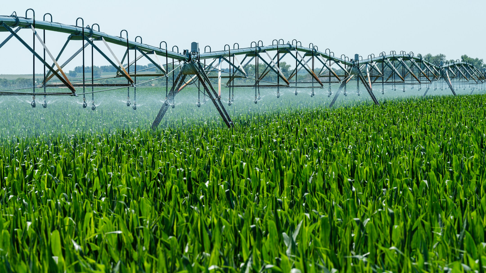

Innovative crop management solutions
Agricultural Crop Management System in Pune revolutionizes how farmers cultivate their land. Our platform enables you to select the best crops tailored to your local weather and soil conditions. We provide precise fertilizer recommendations along with brand and quantity details to enhance yields. With advanced crop yield prediction based on annual rainfall, pesticide, and fertilizer usage, we guide you in choosing the most suitable crops for your region, ensuring a prosperous harvest.
Get in touch
